Privvy (PVX) 什么是 PRIVVY（PVX）？ PRIVVY (PVX) 是 Tron 区块链上第一个以隐私为导向的DEFI 代币。 Tron区块链上的隐私币。 私人用户的余额是隐藏的，转账在 tronscan 和
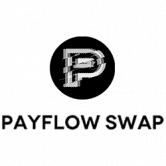 PayFlowSwap 由 PayFlow (PFT) 提供支持的 PayFlowSwap 是下一个 DeFi 多仪表板。 PayFlow(Swap) 旨在在一个平台内安排所有交易，使加密支付变得容易和可访问，并允许您在没有中心化中介的情况下交易加密货
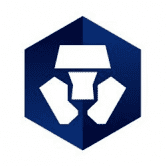 Crypto.com DeFi Wallet 直接从您的 DeFi 钱包中种植和交换 DeFi 代币的最佳场所 流动性提供者享受选定矿池的交换费分享和红利收益一个非托管钱包，可让您在一个地方访问一整套 DeFi 服务。
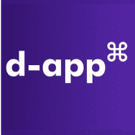 d-app 每天赚取 1%。投资最低100美元。您将每天获得 1 美元，直到您投资的 300%。 100% 去中心化智能合约。赚取 wyz 代币 (wyzth) (TEQuSBH1jxGzqJf
Daikiri Finance Daikiri 是一个多链 DeFi 应用平台，具有一组协议，旨在引导下一阶段的 DeFi 采用，并建立区块链所需的基础设施，以将流动性、创新和采用引入其生态系统和社区。Da
Defily Finance Defily 是 KardiaChain 上的第一个跨链去中心化金融项目，它将很快连接到 Ethereum、Binance Smart Chain、Harmony、Avalanche 和 Tom
DeFlast 使用 DeFlast 即时交换 Compound 上的抵押品。由 Aave 的闪贷和 Uniswap 提供支持。一站式交易，零资本要求。跳过复杂的步骤，轻松将您的抵押品换成储蓄率更高的资产。现在所有资
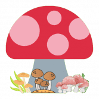 Fungi Finance Fungi Finance - 币安智能链 (BSC) 上的下一代 DeFi 交易所Fungi Finance - 币安智能链 (BSC) 上的下一代 DeFi 交易所。#6414。一般来说。#1481 在 DeFi 中。#2217。在 BNB 链
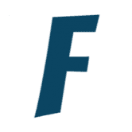 FuzzSwap FuzzSwap 是一个交换平台，通过使用我们的 FUZZ 代币，向在 Fuzz.Fi Harmony 验证器中质押的用户提供奖励。我们还管理 Ript.io，这是一个 Harmony 工具 dapp 仓库，包括一个高级代币
Gatorswap finance BSC 上最好的 AMM、Yield Farm 和 Dex。 自动流动性 Gator 的每次转让必须缴纳 7% 的转让税。 5.6% 的转让税通过合约自动添加到流动性池中，以不断提高价格下限
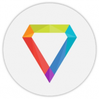 Gem Gard Finance Gem Gard Finance 是一个革命性的基于区块链的金融生态系统，它将使任何人、任何地方都能够参与加密经济Gem Gard Finance是一个革命性的基于区块链的金融生
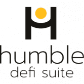 Humble DeFi Humble DeFi 是您的一站式 DeFi 套件。我们的第一个产品 HumbleSwap 是一种 AMM 风格的交易所，它允许您交换、汇集和赚取您的 ASA，并通过参与我们的收益农场获得额外收益！从
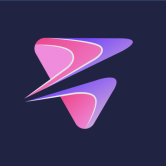 Liberti.Finance Liberti Finance DeFi 平台。小比特币挖矿。Liberti (LBT) 是 TRC-20 代币和 TRON 网络的数字资产。 Liberti 代币是支持和发展可持续 Liberti 去中心化金融 (DeFi) 生态系统的资本主题之一。Lib
Qubit Finance Qubit 是一个去中心化的货币市场平台，它利用区块链的速度、自动化和安全性来高效、安全地连接借贷双方。 Qubit Finance 的用户可以作为贷方和借方参与。 贷方：作为流
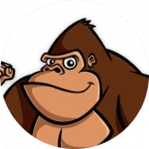 PolyGORILLA Finance PolyGORILLA Finance 是 Polygon 上的一个新 DeFi 项目，采用通货紧缩代币模型，最大供应量为 100,000 GORILLA 代币。在审查了几种单产农业模式后，PolyGORILLA Finance决定在
PolyLime Finance PolyLime Finance是 Polygon 网络上的下一代单产农业协议，具有许多独特和创造性的功能，可让您获得被动收入。 Polygon的愿景是建造以太坊的区块链互联
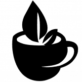 Polymocha Finance PolyMocha Finance 是 Polygon Matic 网络上的一个新的 DeFi 项目。这是 PolyBrew 项目的第二层，以 MOCHA 为特色，最大供应量为 70,000 个代币。 在审查了几种单产农业模式后，我们决定在我们的平台上采
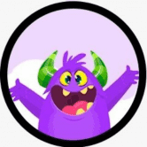 POLYMONSTERS Monster 是研究和结合 DeFi 生态系统中最好的 Yield Farming 项目的结果。 Monster 向他们学习，甚至改进了有关代币经济学和安全性的关键特性。Monster 很自豪能够向Mons
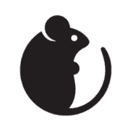 Polymouse Finance Polymouse Finance 是一个建立在 Polygon 上的去中心化收益农场，其中包括 NFT、IFO 和去中心化 AMM 等其他实用程序。 Polygon的愿景是建造以太坊的区块链互联网。简
Polypulsar Polypulsar 是一个具有单产农业功能的区块链游戏项目。Gamma Polypulsar 是一个用于单产农业和区块链游戏的混合平台。这是我们在区块链上创建 MMORPG 游戏之旅的第四层。该
PolyPup Finance PolyPup Finance 是 Polygon 上的一个新 DeFi 项目，采用通货紧缩代币模型，最大供应量为 31,000 个 PUP 代币。在审查了几种单产农业模式后，PolyPup Finance决定在平台上
PolyQuity PolyQuity 是一种去中心化借贷协议，允许您以 Matic 为抵押品提取无息贷款。贷款以 PUSD（一种与美元挂钩的稳定币）支付，并且需要保持 110% 的最低抵押率。除了抵押
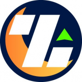 Overnight OVN 代币与 USDC 挂钩，即在任何时候都可以用 1 USDC 换 1 OVN 和 1 OVN 换 1 USDC。为了维持挂钩，OVN 以 DeFi 资产全额抵押，可按需转换为 USDC 挂钩机制基于&rsqu
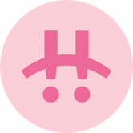 Pancake Bunny 与兔子一起获得更多的蛋糕。PancakeBunny 是用于 PancakeSwap 的新型且快速增长的 DeFi 收益聚合器。PancakeBunny 协议使农民能够利用他们寻求
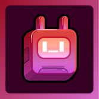 Pandora Digital PANDORA 是基于游戏化 DEX 和 IDO 启动板的下一代去中心化生态系统，为每个人提供整体和身临其境的 Defi 体验，同时使早期加密投资者能够在当今新兴的基于区块链的项目
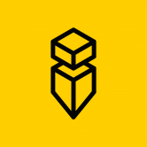 PandoraSwap Pandora swap 是第三代 Defi 协议，是 ASTAR Network 上交易费用最低（0.17%）的最先进的去中心化交易所。最重要的是，我们率先将协议拥有的流动性 (POL) 引入我们在 ASTAR 网络上的
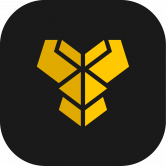 Pangolin Exchange Pangolin 是在 Avalanche 上运行的去中心化交易所 (DEX)，使用与 Uniswap 相同的自动做市 (AMM) 模型，具有名为 PNG 的本地治理代币，该代币是完全社区分发的，能够交易在以太坊上
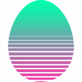 ParrotDeFi 什么是 Parrot Defi？ Parrot DeFi 是一个去中心化的收益农业和 NFT 多链平台，在 Matic、IoTeX、Arbitrum 和 Harmony 上运行。 1PEGG（Harmony
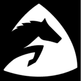 Paycer Finance Paycer 的目标是聚合多链 DeFi 投资，让用户无需自己的钱包或专业知识即可使用它们。这应该允许任何人在银行不再支付利息的世界中产生被动收入。因此，Payc
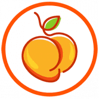 Peach Finance Peach Finance 是一种一体化的去中心化金融，您可以在其中赚钱。我们有一个交换平台来交换代币并添加/删除流动性，农场和碗用于产量农业，新项目的初始农场产品
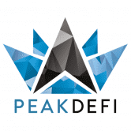 PEAKDEFI PEAKDEFI 是一个在以太坊区块链上推出的 DeFi 平台，现在也在币安智能链上推出。在以太坊区块链上，创建 PEAKDEFI 是为了扰乱整个投资环境。尽管当前的解决方案存在很多缺